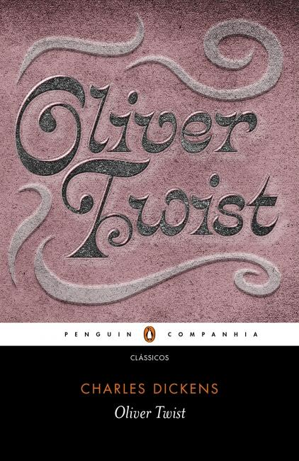
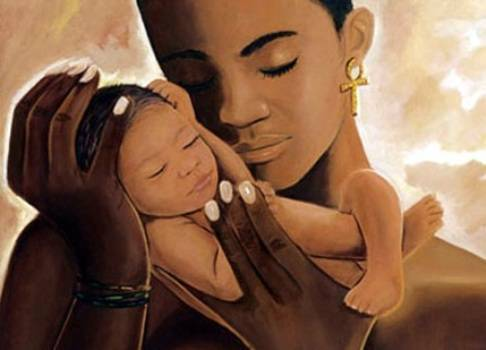
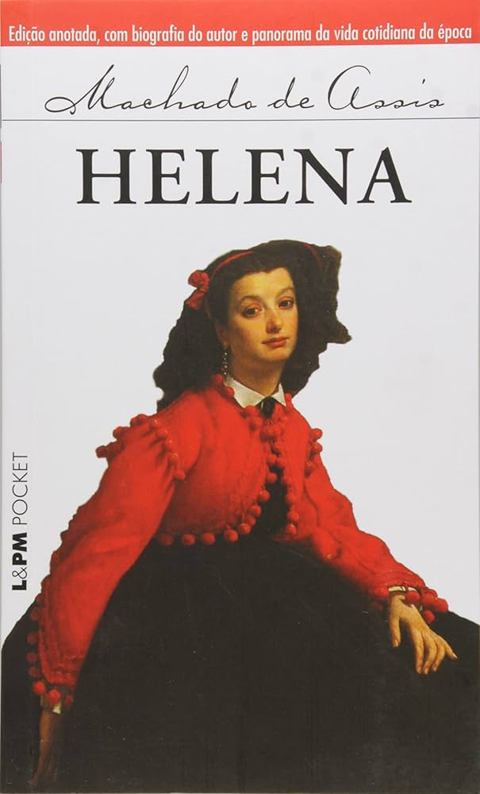

Década de 1870

O livro Oliver Twist
Oliver Twist é um romance de Charles Dickens que relata as aventuras e desventuras de um rapaz órfão. No Brasil, a tradução oficial foi iniciada por Machado de Assis, em 1870. A história segue a vida de Oliver Twist, um menino órfão que nasce em uma instituição para órfãos em Londres. Desde o nascimento, Oliver é tratado com crueldade pelas autoridades do local e, mais tarde, é enviado a um trabalho forçado em uma casa de correção, onde continua a ser maltratado. Quando Oliver pede por mais comida ("Por favor, senhor, quero mais"), ele é severamente reprimido e, após ser expulso, foge para Londres. O livro expõe as duras condições de vida dos órfãos e das classes mais baixas na Inglaterra vitoriana. A história mostra como crianças eram abusadas e usadas como mão de obra barata ou como criminosos em um sistema sem escrúpulos. Além disso, a obra denuncia os crimes organizados e a exploração de crianças nas ruas de Londres, representados pelos personagens como Fagin e o cruel Bill Sikes.

Lei do Ventre Livre
A lei do ventre livre foi assinada em 28 de setembro de 1871 e declarou livres os filhos de mulheres escravizadas nascidos no Brasil a partir daquela data. A lei também estabeleceu regras para o tratamento e criação dos filhos menores, e para a libertação anual de escravos. A Lei do Ventre Livre foi um marco no processo de abolição da escravidão no Brasil e uma das precursoras da Lei Áurea. No entanto, não foi suficiente para agradar os abolicionistas, que exigiam a extinção imediata da escravidão. A lei estabeleceu que os filhos menores ficariam sob a autoridade dos senhores das mães, que eram obrigados a criá-los até os oito anos de idade. Após esse período, os senhores podiam optar por receber uma indenização do Estado ou utilizar os serviços dos menores até os 21 anos.
Partido Republicano Paulista
Partido Republicano Paulista (PRP) foi um partido político brasileiro fundado em 18 de abril de 1873, durante a Convenção de Itu, que foi o primeiro movimento republicano moderno no Brasil. O partido surgiu em um contexto de crescente insatisfação com o Império de Dom Pedro II, particularmente entre as elites agrárias do estado de São Paulo. O partido foi formado por um grupo de cafeicultores e políticos que desejavam uma mudança no sistema político e uma maior autonomia para o Brasil, além de um modelo que favorecesse os interesses da classe dominante, especialmente a economia cafeeira. Inicialmente, o PRP defendia a ideia de uma república federalista, com maior descentralização de poder para os estados. A partir dessa plataforma, o partido se posicionou como um dos principais articuladores da queda do Império e da substituição da monarquia por uma república, o que ocorreu com a Proclamação da República em 1889, liderada por militares.

O livro Helena
Helena é um romance de Machado de Assis. Foi publicado em 1876. o livro conta a história de Estácio e sua família após a morte de seu pai, oConselheiro Vale, que revela em seu testamento a existência de uma filha natural chamada Helena, a quem pede que a família receba. A convivência com Helena causa sentimentos mistos, mas Estácio a acolhe e ela conquista rapidamente a confiança de todos. Enquanto Estácio enfrenta as pressões sociais de casar-se com Eugênia e assumir um cargo público, ele começa a se aproximar de Helena, que, por sua vez, tem um pretendente, Mendonça. Estácio, tomado por ciúmes, começa a perceber seu amor inconsciente por Helena, um amor proibido pela sociedade, que é apontado pelo padre Melquior como incestuoso. A trama se complica quando é descoberto que Helena fazia visitas secretas a um homem chamado Salvador, que é revelado como seu verdadeiro pai biológico. Com a revelação de que ela não era filha do Conselheiro, Estácio e Helena poderiam finalmente viver seu amor, mas dois obstáculos surgem: o escândalo causado pelos compromissos já assumidos e a crise de consciência de Helena, que sempre viveu uma mentira. Após revelar seu amor por Estácio e a renúncia a Mendonça, Helena, sentindo-se incapaz de recuperar a confiança da família, adoece e morre em poucos dias.